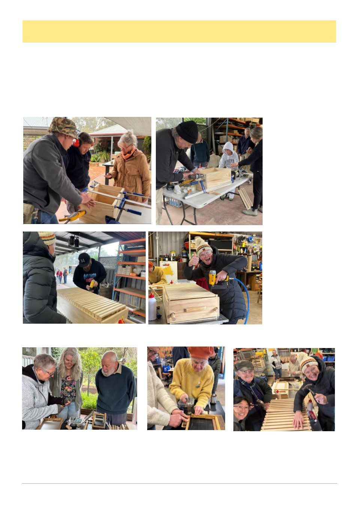

August 2026
21
Bendigo Branch Report
Winter has arrived in Bendigo, however our dedicated members still enjoy catching up at our regular monthly
information evenings. Ag Vic Apiary team led by Junee and Ashton gave us an update on what is happening with
the team at our July meeting. This was extremely timely as we have welcomed some new members and some of our
previous members have returned. Highlighting the importance of testing, testing, testing, considerations and the
planning required to look after bees to survive varroa.
On Sunday 19th July the BBVAA conducted our Make and Mend Day activity which was hosted by Angelique
and Ross. The weather started out with bright sunshine however that soon changed and the cloud rolled and the tem-
perature dropped. Attendance this year was again extremely good. The club had purchased items from our very
good friends at Whirrakee Woodware and Waggle and Forage. The team got stuck into rebated hive flat packs of
boxes nucs and ideals under the guidance of Jamie, Stafford and John.
Stafford
brought
along his frame jig
much to the delight of
Stacey and two new
members. 50 x frames
done and dusted in no
time. It was great ob-
serving the joy and sat-
isfaction as people be-
came more independent
in building their own
hive ware.
Not only did our
members
make
new
equipment
some
brought along their well
-used
equipment
for
mending. This was ex-
citing to see that you
don‘t just have to buy
new equipment you can
fix it as well. Re-wiring
frames, fixing old boxes
and
embedding
wax
foundation under the
watchful eyes of some
of our experienced members. A couple of our long-time members of the club have decided to reduce their hives and
as such had some equipment for sale at very good prices. Some of the members purchased the items.
Thank you to Angelique, Ross, Stafford and Jamie for hosting, coordinating, supplying and instructing, your ef-
forts were greatly appreciated. Congratulations to everyone who participated, there was an amazing level of collabo-
ration, such a supportive environment, with plenty of socialising and bee discussions.
The branch‘s next weekend activity is on Sunday 20 September - Inspecting Hives after winter.
Don‘t forget our annual Field Day, 11 October 2026 at Harcourt Recreational Reserve. Put it in your calendar.
Peta Dawe